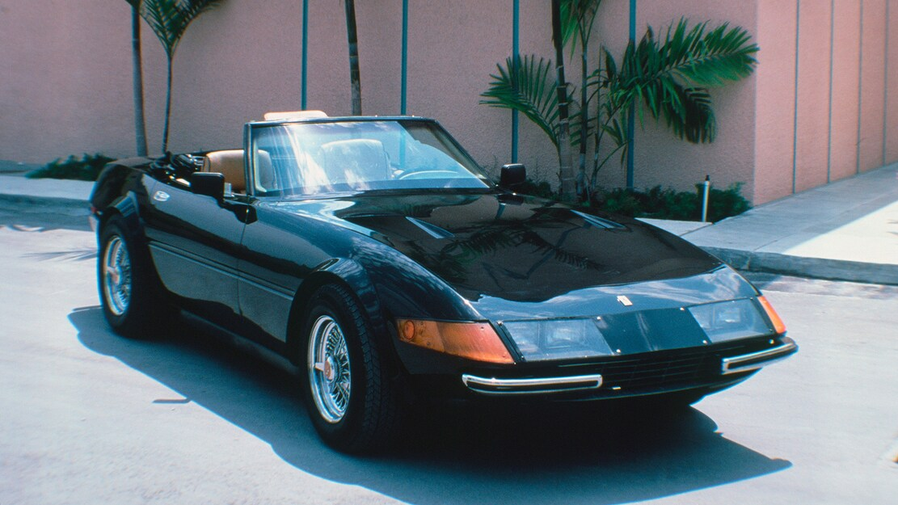
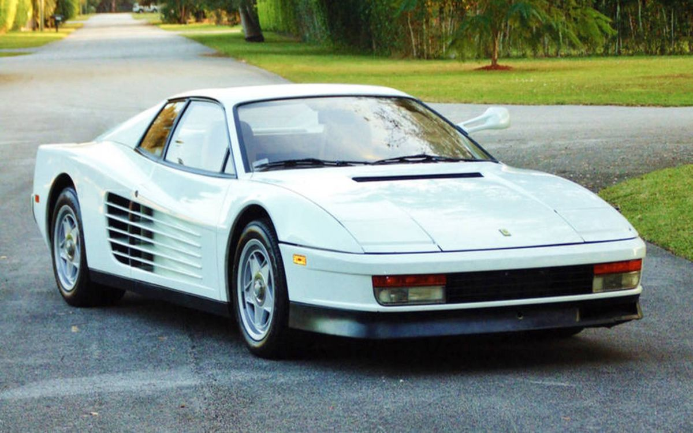

MIAMI VICE
MENU
HOME
OVERVIEW
LOCATIONS
MUSIC
CARS
FASHION
GALLERY
CONTACTS
Cars
Two automobiles drew a lot of attention in Miami Vice, the Ferrari Daytona and Testarossa. During the first two seasons and two episodes of the third season, Detective Sonny Crockett drove a black 1972 Ferrari Daytona Spyder 365 GTS/4 kit replica built on a Chevrolet Corvette C3 chassis. The car was fitted with Ferrari-shaped body panels by specialty car manufacturer McBurnie Coachcraft. Once the car gained notoriety,[48] Ferrari Automobili filed suit demanding that McBurnie and any others cease and desist producing and selling Ferrari replicas and infringing upon the Ferrari name and styling. As a result, the Daytona lasted until season 2, at which point it was 'blown-up' in the season three premiere episode, "When Irish Eyes Are Crying". Neither the kit car nor its backup were actually destroyed, as the production company simply blew up a small, plastic model for both cost and safety reasons. The fake Ferraris were removed from the show, with Ferrari donating two brand new 1986 Testarossas as replacements. The Ferrari Daytona is the subject of a huge continuity goof on the show, when it suddenly reappears in "El Viejo", six episodes after its destruction, without explanation. Originally "El Viejo" was set to be the third-season premiere, but studio executives felt the Daytona's destruction would serve as a more dramatic opening to the season. Don Johnson's contract-holdout at the start of the season also played a part, delaying filming to the point where "El Viejo" could not finish in time for the season premiere.
The series' crew also used a third Testarossa look-alike, which was the stunt car. Carl Roberts, who had worked on the Daytona kit cars, offered to build the stunt car. Roberts decided to use a 1972 De Tomaso Pantera, which had the same wheelbase as the Testarossa and thus was perfect for the body pieces. The vehicle was modified to withstand daily usage on-set, and continued to be driven until the series ended.
Crockett was also seen driving a black 1978 Porsche 911 SC Targa in a flashback to 1980 in the Season 3 episode "Forgive Us Our Debts."
Crockett's partner, Ricardo Tubbs, drove a 1964 Cadillac Coupe de Ville Convertible. Stan Switek drove a turquoise 1961 Ford Thunderbird. Gina Calabrese drove a 1971 Mercury Cougar XR-7 convertible. When Stan and Larry were undercover, they drove a Dodge Ram Van. Other notable vehicles that appear in Miami Vice include Lamborghinis, AMG Mercedes-Benzes, BMWs, Maseratis, Lotuses, DeLoreans, Porsches, and Corvettes. American muscle cars, such as the Pontiac GTO and Firebird Trans Am, Ford Mustang, Chevrolet Camaro, Plymouth GTX and Barracuda, Chevrolet Monte Carlo SS, and the Buick Grand National also made appearances.


by Bosiy E. 2023